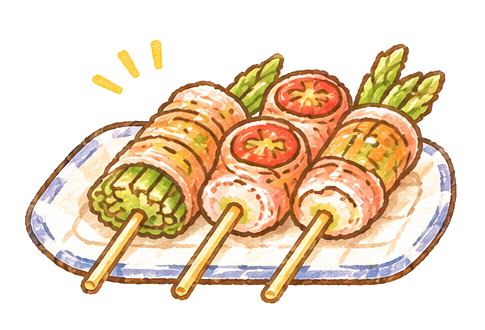
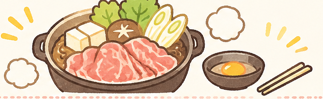
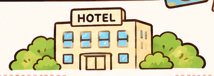
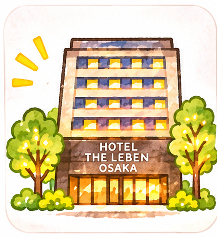
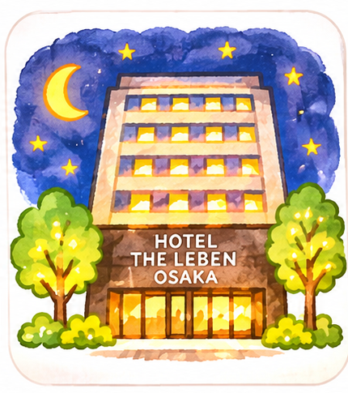

✈️ 來企大阪玩！
大阪・京都・奈良 六天五夜
2027.01.07 — 2027.01.12
🌸 距離大阪旅行還有 🌸
計算中
天
✈️ 2027.01.07 出發！
✈️ 航班資訊
🟡 去程｜01/07（四）
08:05
TPE 桃園機場
第二航廈
第二航廈
✈️
11:35
KIX 關西機場
第一航廈
第一航廈
回程｜01/12（二）
19:00
KIX 關西機場
第一航廈
第一航廈
✈️
21:35
TPE 桃園機場
第二航廈
第二航廈
🗓️ 選擇想查看的日期
DAY 1
抵達大阪 × 通天閣 × 阿倍野展望台
01/07（四）｜抵達大阪・夜景・美食
08:05
19:00–20:15
やさい串巻き なるとや Ao 🍢
享用日式創意蔬菜串燒，品嚐大阪美食。
📍 なるとや Ao✓ 已完成座位預約
預約日期2027/01/07（四）
預約時間19:00
人數2 人
現場請出示 Klook 憑證

🌙 DAY 1 完成！抵達大阪，準備迎接精彩旅程！
DAY 2
環球影城 USJ × 美食晚餐
01/08（五）｜暢玩 USJ・享用壽喜燒
08:00–17:00
18:45–20:00
すき焼き 藤もと 🍲
享用人氣壽喜燒，品嚐關西風的香甜美味。已預約 18:45，預留約 75 分鐘用餐。
📍 すき焼き 藤もと✓ 已完成座位預約
預約日期2027/01/08（五）
預約時間18:45
人數2 人
現場請出示 Klook 憑證

🌙 DAY 2 完成！環球影城玩得開心，晚餐也要好好享受！
DAY 3
木津市場 × 勝尾寺 × 大阪購物
01/09（六）｜美食、祈福與購物的一天
07:00
飯店出發 🏨
從 HOTEL THE LEBEN OSAKA 出發，展開今天的行程！

07:15–08:15
13:25–14:58
21:14
返回飯店休息 🌙
結束充實的一天，返回 HOTEL THE LEBEN OSAKA 好好休息！
🌙 DAY 3 完成！美食、祈福、購物一次滿足！
DAY 4
京都散策・清水寺與祇園
01/10（日）｜古都風情・美食與拍照
08:30
飯店出發 🏨
從 HOTEL THE LEBEN OSAKA 出發，前往京都展開一天的行程！

20:13
返回飯店 🌙
回到 HOTEL THE LEBEN OSAKA，結束充實的京都散策日。

🌙 返回 HOTEL THE LEBEN OSAKA・休息
DAY 5
2027.01.11 MON
奈良一日遊完成！帶著滿滿的照片與回憶回飯店休息 ♡
DAY 6
回程日・行程待安排
01/12（二）｜大阪 → 關西國際機場
DAY 6 行程規劃中
這一天先保留空白，等行程確定後再補上內容。
回程班機：19:00 關西國際機場 T1 出發。